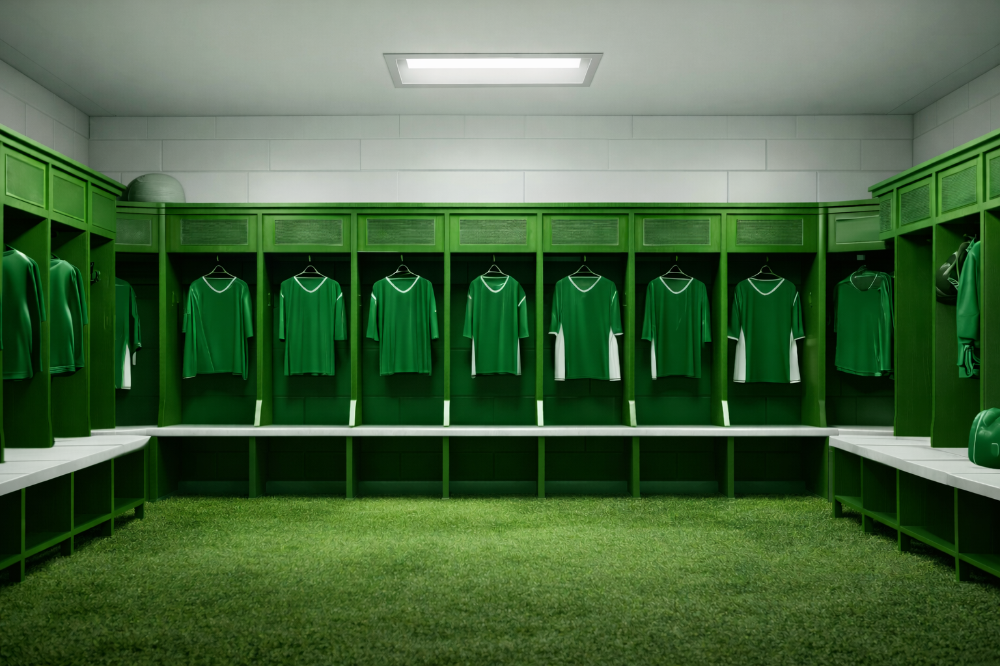

HISTORIA E TRADIÇÃO
A Vestiario90 nasceu da paixão pela moda urbana e pela cultura street dos anos 90, trazendo peças que unem autenticidade, conforto e identidade. Fundada por jovens empreendedores que acreditam que estilo é uma forma de expressão, a marca surgiu com o propósito de oferecer roupas versáteis, modernas e acessíveis, sem abrir mão da qualidade. Cada coleção é pensada para representar atitude, personalidade e a essência de quem vive a cidade intensamente. Mais do que uma loja, a Vestiario90 é um movimento que conecta pessoas através do estilo.
o começo da vestiario90
A REVELAÇÃO DA VESTIARIO
A revelação da Vestiario90 marcou um verdadeiro espetáculo nas redes e nas ruas. Sua inauguração foi anunciada simultaneamente em todas as plataformas digitais, com campanhas visuais impactantes, vídeos promocionais e uma identidade marcante que rapidamente chamou atenção do público jovem. Influenciadores locais, ações interativas e uma forte presença nas mídias sociais transformaram o lançamento em um evento memorável. Desde o primeiro dia, a Vestiario90 não apenas abriu suas portas — ela entrou em cena como uma marca que nasceu para se destacar.

Historia e tradição com os maiores clubes do mundo, desde o Brasil ate a europa

A estreia da Vestiario90 foi planejada como um verdadeiro marco digital. Antes mesmo da abertura oficial, a marca já movimentava as redes com teasers misteriosos, contagem regressiva e conteúdos exclusivos que despertaram curiosidade e expectativa. No dia da inauguração, a campanha tomou conta das mídias sociais, alcançando milhares de pessoas em poucas horas e consolidando a identidade da Vestiario90 como uma marca ousada, autêntica e conectada com a nova geração. Não foi apenas uma abertura — foi o nascimento de um novo movimento no cenário da moda urbana.